下午二時十五分從三千浦港出發, 穿越了南海郡四大橋樑 — 三千浦大橋、草養大橋、勒島大橋、昌善大橋, 跨越了三個島嶼 — 慕開島、草養島、勒島, 於下午三時四十分來到昌善島, 也是今天遠足的目的地, 心情十分滿足! 因比估計的早了很多來到昌善島, 所以便計劃乘巴士往昌善橋 (창선교), 參觀知足海峽(지족해협)最原始捕漁方式的竹防廉 (죽방렴)。
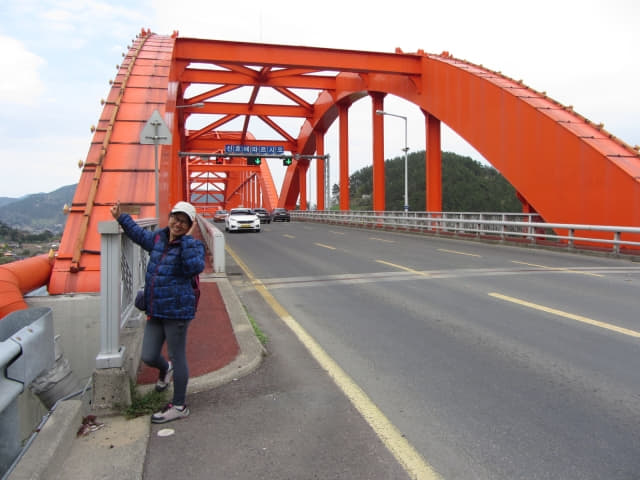
離開昌善大橋, 接著是步行往昌善大橋前的巴士站, 那裡應該有巴士往昌善橋的。昌善大橋頭有一間警察局, 因整個遠足行程半個途人也沒碰到, 至今還不肯定大橋是否可以給外人步行的, 所以低頭匆匆走過。
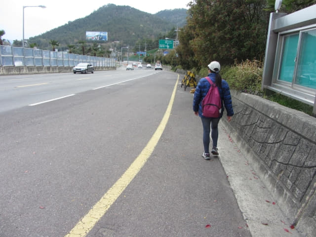
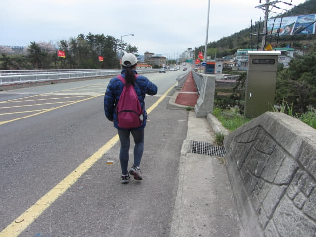
丹航橋 (단항교)
哈哈~~~ 原來還有一道橋 — 丹航橋。
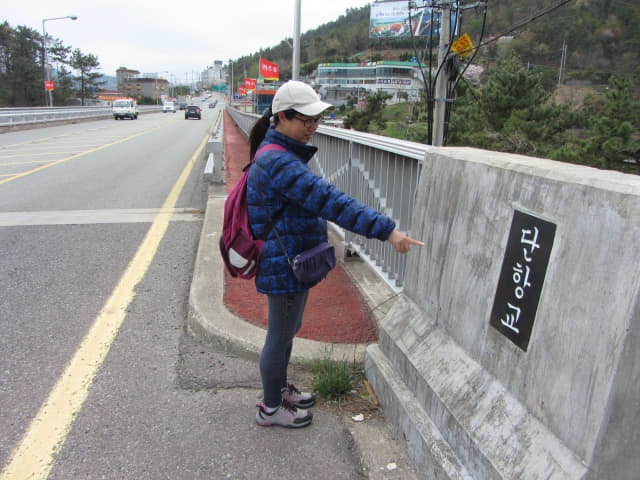
計劃在「창선대교.단항」巴士站 乘巴士往昌善橋 失敗
因恐怕巴士隨時駛來, 便收起相機, 匆匆走下丹航橋, 走過一個寬闊的十字路口, 接著是一段向上的坡道, 走了十多分鐘, 才看到前面的一個巴士站, 便立即跑去, 最後上氣不接下氣的來到巴士站。
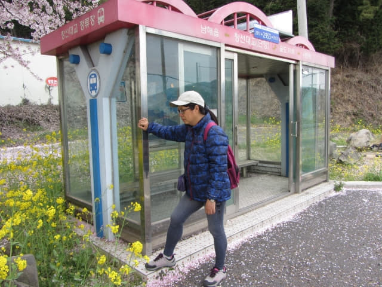
望望剛才從昌善大橋頭走來的一段路, 真是很遠的。昌善島的道路十分簡單, 只要從昌善大橋駛來, 便是往昌善橋的方向, 只是不清楚什麼時間會有巴士。
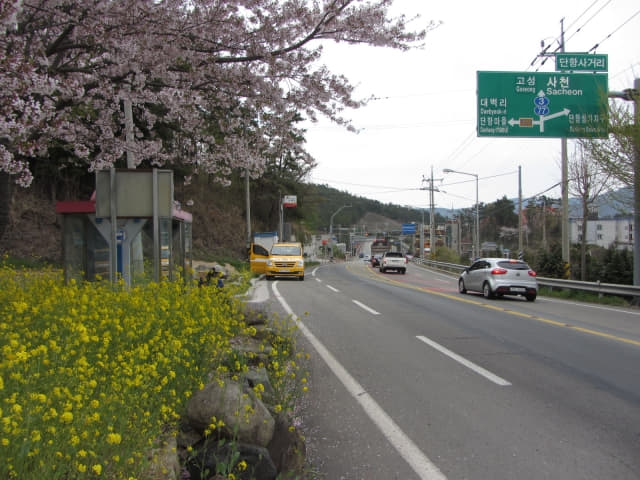
所以只要有巴士從昌善大橋那裡駛來, 就可以上車。
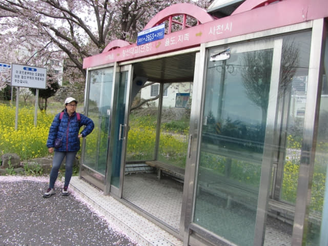
巴士站旁有燦爛櫻花和油菜花, 十分漂亮。哈哈~~~ 巴士站也可以那麼漂亮! 服未!
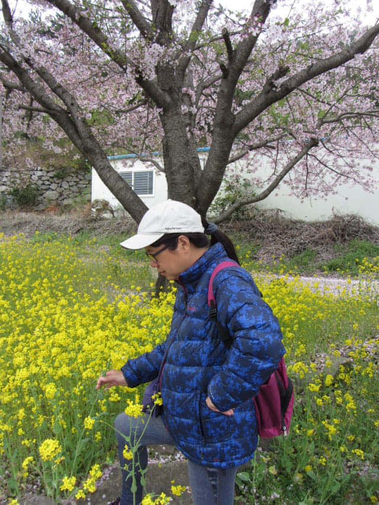
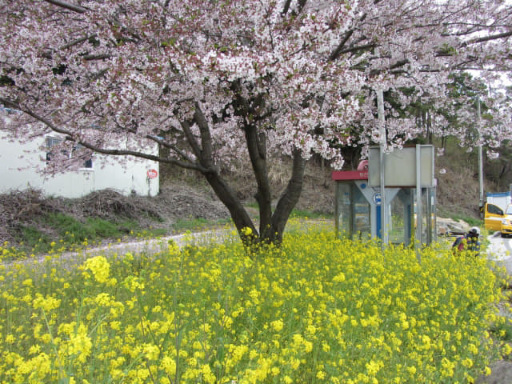
不清楚什麼時間會有巴士來, 唯有呆等。
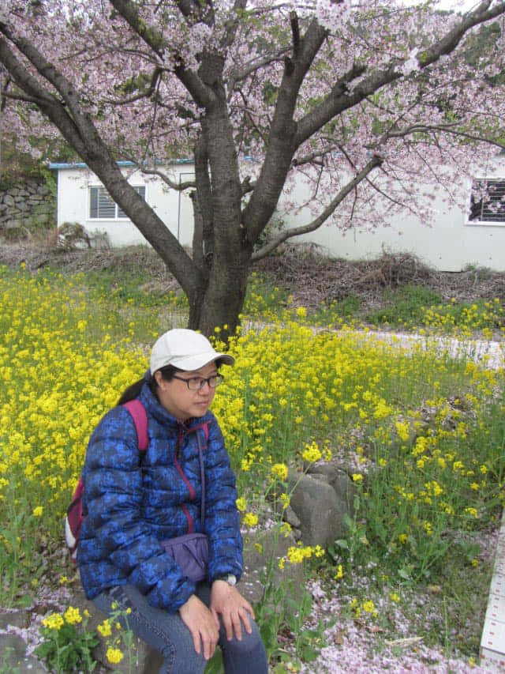
等了十多分鐘, 都沒有巴士蹤影, 開始懷疑今天會否還有巴士班次行駛, 離巴士站不遠停靠了一輛黃色的工程車, 有兩位工人正在車外工作, 便走去問問其中一位工人會否有巴士往昌善橋, 他走到巴士站望望好像是時刻表的通告, 接著表示好像有, 又好像沒有! 等於沒有答案!
沒辦法! 唯有繼續等。
往海濱旁的餐廳區找洗手間
又等了一會, 發覺好像有點不對勁! 完全沒有巴士的蹤影。
因午餐後至今都沒有去洗手間, 這時她的生理需要到達「忍無可忍」的地步, 說現在一定要去廁所。剛才走來時, 看見在十字路口左邊的海濱旁有幾間好像餐廳的大樓, 便立即沿馬路走去, 也順便看看有沒有其他巴士站。
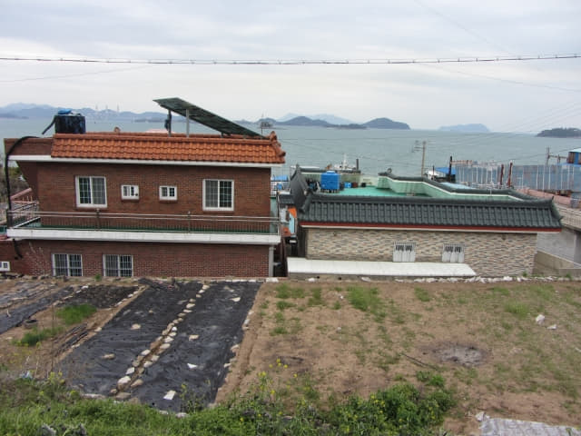
來到十字路口左邊海濱旁的地方, 看來是一個旅遊區, 這裡有一間名為「북해도」的海鮮餐廳, 可惜沒有開門營業。
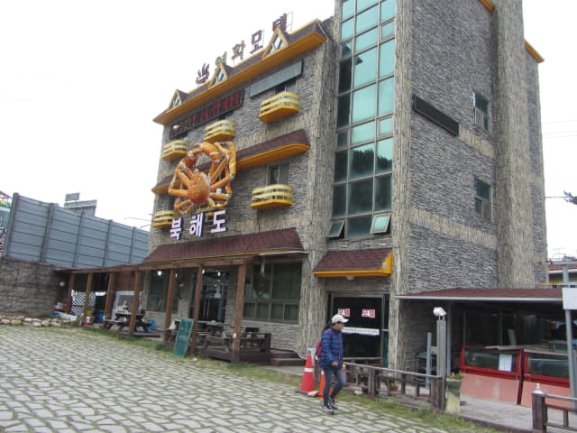
唯有繼續往其實地方找廁所, 沿餐廳旁的馬路走上山坡。
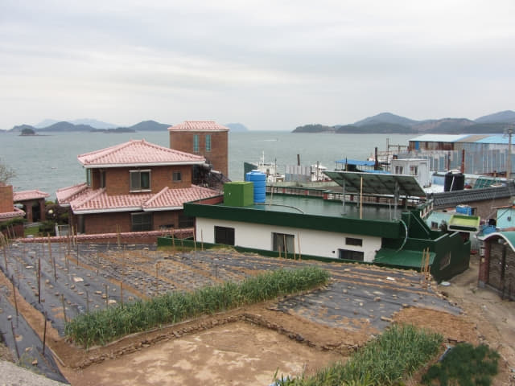
來到山坡上, 這裡有一間汽車酒店, 滿心歡喜走去, 以為一定有洗手間, 怎料服務台職員竟然說沒有公用洗手間! How about 房間的洗手間? 答案不用說啦嘛!
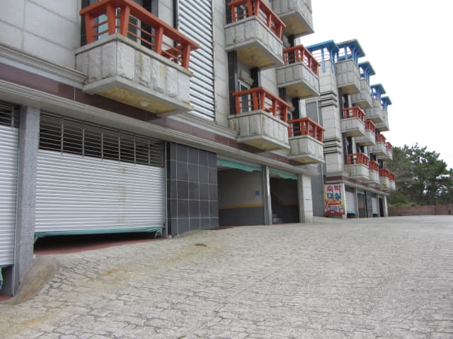
前面再沒有建築物, 便掉頭返回馬路, 她已經到了「忍無可忍 + 無可忍」, 我建議她在路旁較隱蔽的一角解決, 但她又不敢。
看見「북해도」海鮮餐廳對面有幾間好像餐廳的建築物, 便匆匆走過馬路, 路口的餐廳也沒有開門營業。唯有沿馬路走上山坡, 山坡上也有幾間餐廳, 滿以為總有一間開門營業吧! 也不敢相信, 統統都沒有!
看看前面, 已經進入山區、叢林地帶, 沒辦法了, 唯有在前面的樹林中解決! 這裡肯定沒有途人經過, 估計蚊子倒會有很多!
意外地登上神奇巴士往昌善橋
解決完畢, 走出樹林, 突然看見一輛巴士在左邊山坡下駛上來, 估計離我們約一百米! 腦子立即閃一閃: 什麼? 這裡竟然會有巴士行駛? 就算有, 這裡也不是巴士站啦! 但本能反應馬上向巴士揮手。
神奇的事竟然發生, 巴士在我們身旁停下來! 有一位站在車長身旁的男士問我們去那裡? 我們將寫上「삼동면사무소」巴士站的紙條給他看, 他馬上揮手示意叫我們上車。
我們就是在下面地圖標示的地方登上這神奇巴士。
巴士上只有我們兩個乘客。
奇怪的是, 站在車長身旁的男士不斷和車站說話, 指指點點的 (不是某國家經常指指點點的指指點點), 感覺好像在教導車長駕駛, 當時其實懷疑是否在訓練車長!
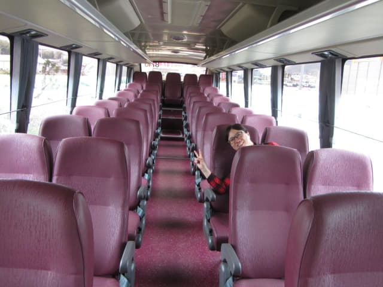
更奇怪的是, 當巴士穿過昌善橋, 來到南海島(남해도), 進入市區後, 在一處路旁停下來, 那位男士和車長竟然下車, 接著不斷抽煙和談天! 起初以為只是幾分鐘, 怎料等了很久, 看見他們完全沒有返回車上的意圖, 我也下車看看四周的環境。
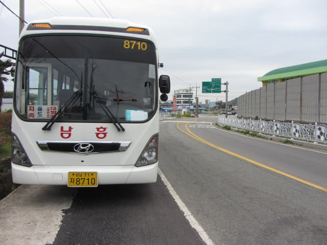
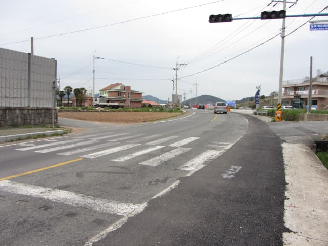
知足里 (지족리 Jijok Ri)．三東面 (삼동면 Samdong Myeon)
「休息」了大約十分鐘, 巴士繼續行駛, 於下午五時十分來到昌善橋頭的三東面的「삼동면사무소」巴士站。如果不是搭乘了這輛這神奇巴士, 恐怕天黑前也未必來到這裡!
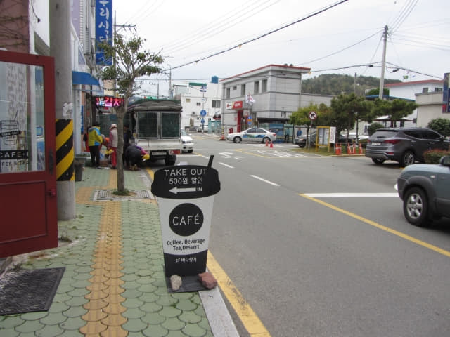

{kind=link}